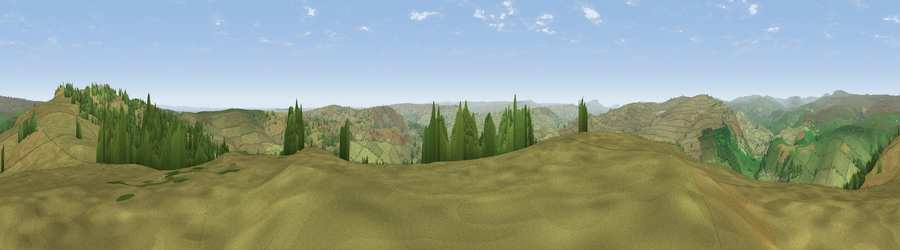

Viewpoint near Skyreholme
#5524 in England · top 3% of its area beats it · near SkyreholmeWhere it is
The exact computed spot (SE 07225 58375). Click the marker for map links.
The view, rendered

A 360° render of this exact spot computed from the terrain model, tree cover and land cover — summer colours, afternoon light, calibrated against photographs of famous viewpoints. Real trees, hedges and buildings will differ in detail.
The panorama
Grey silhouette: terrain skyline in each direction (720 bearings, Earth curvature and refraction included). Dashed green: skyline with trees (+15 m) and buildings (+8 m) as obstacles. Blue strip: how far the ground is visible on each bearing.
Where the view opens
Wedge length = distance to the farthest visible ground on that bearing (vegetation-aware). Rings at 10, 25 and 50 km.
What fills the view
91% grassland · 8% woodland
Angular shares of the visible panorama (visual magnitude), not map area. Landscape diversity 0.15 (0–1 Shannon).
Key numbers
More beautiful places nearby
The staircase of upgrades: each row has a higher view potential than everything closer. Driving times are estimates from straight-line distance, calibrated against real road routing — check an actual route before setting out.
| Place | Direction | Drive | Score |
|---|---|---|---|
| Viewpoint near Skyreholme | NNE · 2 km | ~4 min | 70.2 |
| Lord's Seat | NE · 2 km | ~5 min | 71.1 |
| Viewpoint near Bewerley | NE · 8 km | ~16 min | 75.7 |
| Viewpoint near Bewerley | NE · 8 km | ~16 min | 76.8 |
| Viewpoint near Otley | SE · 19 km | ~33 min | 77.5 |
| Viewpoint near East Witton | NNE · 27 km | ~44 min | 77.8 |
| Little Ingleborough | WNW · 36 km | ~55 min | 78.8 |
| Viewpoint near Ingleton | WNW · 37 km | ~55 min | 79.5 |
54.02133, -1.89122 · source: screening · position refined by local search. Computed location — check access rights before visiting.